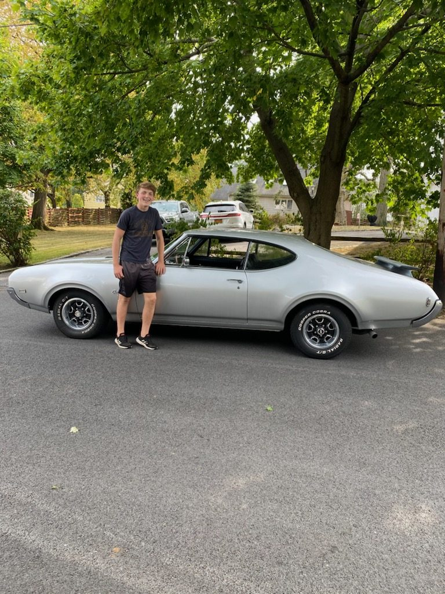
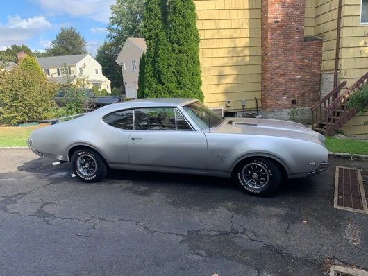
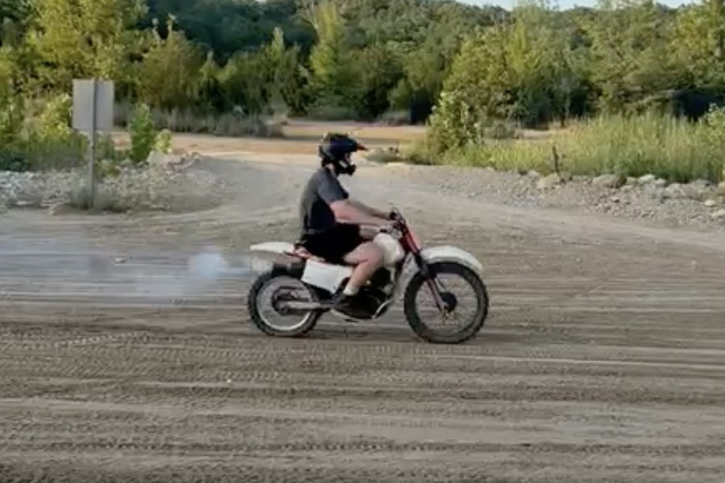
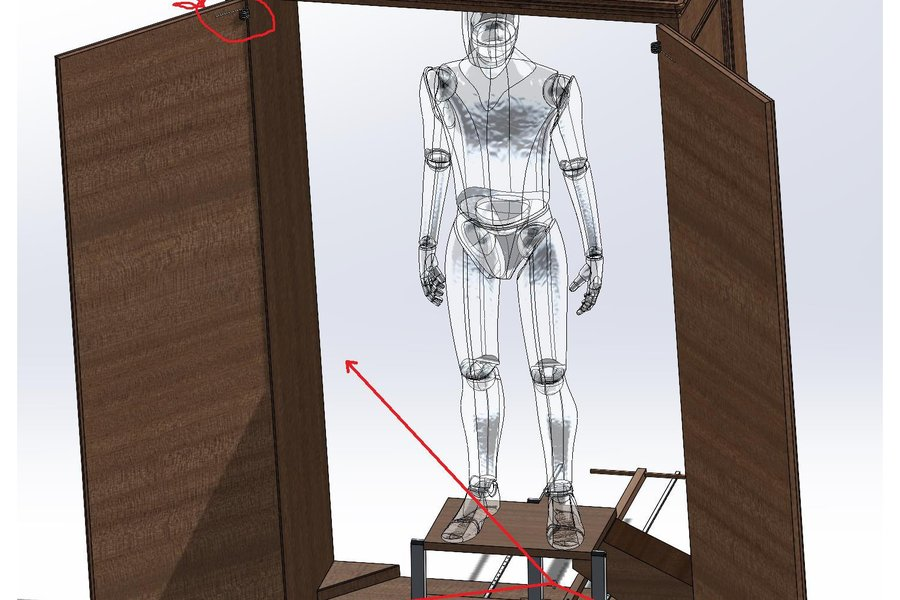
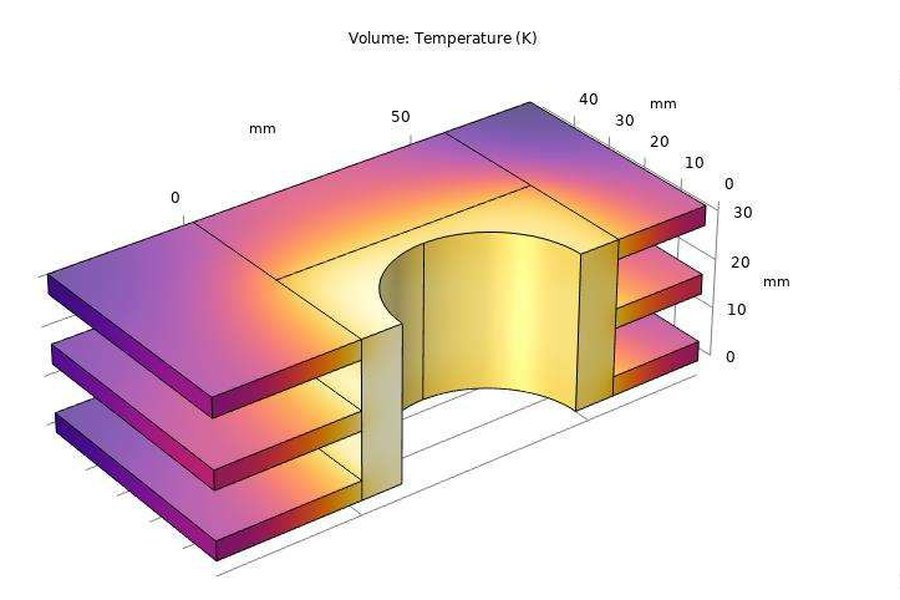
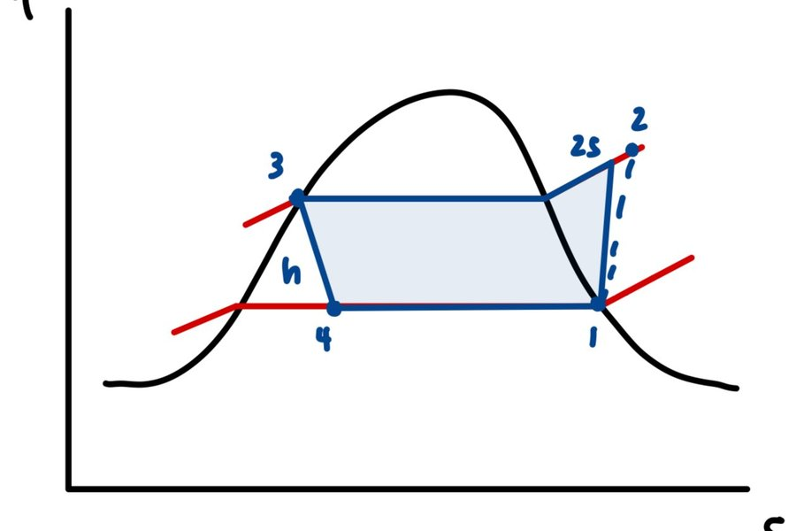

Mechanical engineering — mechanism design and CAD, thermal and finite element analysis, and parts that have to hold a tolerance when you actually make them.

I work best on problems that end in a physical part. The projects below run from a stage mechanism that makes a performer appear to levitate — taken to a released drawing package — through finite element and thermodynamic analysis, down to six parts cut on a manual lathe to a graded tolerance.
The through-line is verification. A simulation nobody checked isn't an answer, and a fault you guessed at isn't diagnosed — a habit I picked up on a fifty-seven-year-old car long before I met it in a lab.

Personal · 2020 – present
A non-running car returned to a reliable daily driver across 100+ documented hours, fabricating parts that no longer exist.
Read more →

Personal · 2025 – present
Two non-running Hondas diagnosed from symptom to cause and returned to the road, including a fabricated exhaust.
Read more →

MEMS 3110 · Spring 2026
A stage mechanism that makes a performer appear to levitate out of a cabinet and descend to the floor — no motors, no pneumatics, all human power.
Read more →

MEMS 3420 · Spring 2026
Finite element study of an air-cooled cylinder — and, more importantly, proving the temperature field could be trusted.
Read more →

MEMS 3430 · Spring 2026
A custom Python model re-solving the full vapor-compression cycle for five refrigerants on a real 1890 office building.
Read more →
Circuits · Spring 2025
An Arduino build owned end to end — component sourcing, circuit design, firmware and physical assembly.
Read more →
MEMS 202 · Spring 2024
A 22-component assembly taken to a released drawing package, with fits specified on every rotating and sliding interface.
Read more →
MEMS 1001 · Fall 2023
Six graded parts on manual lathe and mill, each measured against the print — where tolerances stopped being numbers.
Read more →
Washington University in St. Louis, McKelvey School of Engineering — B.S. Mechanical Engineering, graduating May 2027. NCAA varsity football student-athlete and weightroom captain; Bauer Leaders Academy Scholar-Champion.